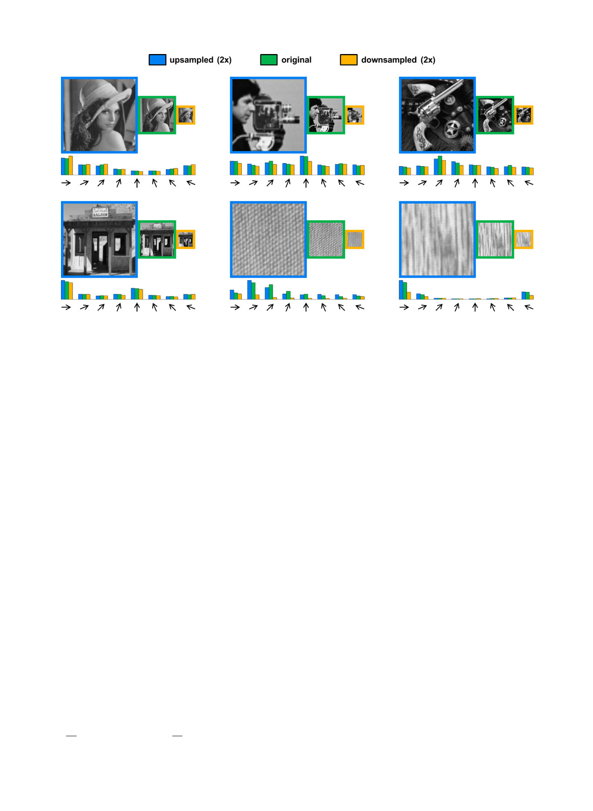

DOLLA�R ET AL.: FAST FEATURE PYRAMIDS FOR OBJECT DETECTION
1535
Fig. 2. Approximating gradient histograms in images resampled by a factor of two. For each image set, we take the original image (green border) and
generate an upsampled (blue) and downsampled (orange) version. At each scale we compute a gradient histogram with eight bins, multiplying each
bin by 0:5 and 1=0:34 in the upsampled and downsampled histogram, respectively. Assuming the approximations from Section 3 hold, the three nor-
malized gradient histograms should be roughly equal (the blue, green, and orange bars should have the same height at each orientation). For the first
four cases, the approximations are fairly accurate. In the last two cases, showing highly structured Brodatz textures with significant high frequency
content, the downsampling approximation fails. The first four images are representative, the last two are carefully selected to demonstrate images
with atypical statistics.
frequency content which can lead to measured gradients
undershooting the extrapolated gradients. Let I0 now
denote I downsampled by a factor of k. We expect that hq
(computed over I) and h0q (computed over I0) will satisfy
h0q hq=k. The question we seek to answer here is whether
the information loss is consistent.
Experiments. As before, define rq ¼ h0q=hq. In Fig. 1b we
show the distribution of rq for a single bin on the pedes-
trian and natural images given a downsampling factor of
k ¼ 2. Observe that the information loss is consistent: rq is
normally distributed around m % 0:34 < 0:5 for natural
images (and similarly m % 0:33 for pedestrians). This
implies that hq0 % mhq could serve as a reasonable approxi-
mation for gradient histograms in images downsampled
by k ¼ 2.
In other words, similarly to upsampling, gradient histo-
grams computed over original and half resolution images
tend to differ by a multiplicative constant (although the con-
stant is not the inverse of the sampling factor). In Fig. 2 we
show the quality of the above approximations on example
images. The agreement between predictions and observa-
tions is accurate for typical images (but fails for images with
atypical statistics).
3.3 Histograms of Normalized Gradients
Suppose we replaced the gradient magnitude M by the nor-
malized gradient magnitude Me defined as Me ði; jÞ ¼
Mði; jÞ=ðMði; jÞ þ 0:005Þ, where M is the average gradient
magnitude in each 11 Â 11 image patch (computed by
convolving M with an L1 normalized 11 Â 11 triangle filter).
Using the normalized gradient Me gives improved results in
the context of object detection (see Section 6). Observe that
we have now introduced an additional nonlinearity to the
gradient computation; do the previous results for gradient
histograms still hold if we use Me instead of M?
In Fig. 1c we plot the distribution of rq ¼ hq0 =hq for histo-
grams of normalized gradients given a downsampling fac-
tor of k ¼ 2. As with the original gradient histograms, the
distributions of rq are normally distributed and have similar
means for pedestrian and natural images (m % 0:26 and
m % 0:27, respectively). Observe, however, that the expected
value of rq for normalized gradient histograms is quite dif-
ferent than for the original histograms (Fig. 1b).
Deriving analytical expressions governing the scaling
properties of progressively more complex feature types
would be difficult or even impossible. Instead, in Section 4
we describe a general law governing feature scaling.
4 STATISTICS OF MULTISCALE FEATURES
To understand more generally how features behave in
resampled images, we turn to the study of natural image
statistics [7], [33]. The analysis below provides a deep
understanding of the behavior of multiscale features. The
practical result is a simple yet powerful approach for pre-
dicting the behavior of gradients and other low-level fea-
tures in resampled images without resorting to analytical
derivations that may be difficult except under the simplest
conditions.
We begin by defining a broad family of features. Let V be
any low-level shift invariant function that takes an image I
and creates a new channel image C ¼ VðIÞ where a channel
C is a per-pixel feature map such that output pixels in C are